La gestion des données
Cet onglet permet de gérer les données, d'en ajouter, d'en supprimer et de visualiser les observations et ainsi que leurs paramètres.
Il existe trois types de gestion des données :
-La gestion des individus et des observations
-La gestion des paramètres (Ages, Cycles biologiques, Districts, Espèces, Fichiers )
-La gestion des types (Type d'activité, Type de marée et Type de soleil)
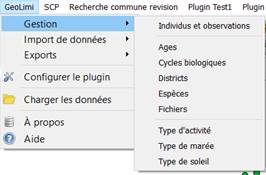
La gestion des individus et des Observations
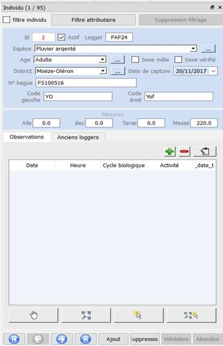
Cette fenêtre est la plus complète du plug-in. Elle permet la visualisation et la gestion des individus et des observations.
Elle est composée de 3 grandes parties.
Les informations seront normalement définies par défaut pour l’Hôte de la base, le port, le nom de la BD et le schéma.
La partie filtre
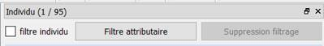
La première permet de filtrer les observations et les individus. Nous filtrons les individus en cochant la case, n’apparaît alors que l’individu mit en évidence en-dessous.
Ensuite il y a un filtre attributaire. Il permet de filtrer selon différents attributs, sur un ou tous les individus. On peut afficher par exemple :
-Un individu ou l’ensemble des individus en fonction du type d’activité
-Un individu ou l’ensemble des individus en fonction de la période
-Un individu ou l’ensemble des individus en fonction du district
Les observations correspondantes s’intègrent dans la liste d’attributs de la fenêtre.
Le bouton grisé permet la suppresion du filtrage.
La partie informations de l'individu
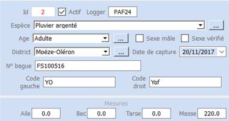
Cette partie de la fenêtre concerne les informations sur les individus. Il est possible ici de modifier les informations concernant un individu comme sa biologie, sa biométrie, son numéro de bague, son lieu de capture (district), et son numéro de logger.
Il est important de savoir que la modification de ces informations entraine une modification en cascade de toutes les observations, mais les observations seront toujours liées à lui.
Si le sexe est vérifié et défini à postériori, l’information se met à jour automatiquement dans le plug-in.
La partie information de l'individu
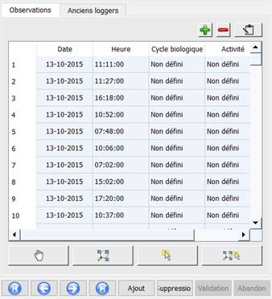
Cette partie permet de visualiser les données attributaire des observations qu’elles soient filtrées par individus, par le filtre attributaire ou par les anciens logger.
Les anciens loggers :
Il est possible de faire apparaître les anciens logger, qui sont liés à un individu. En effet un individu peut avoir deux loggers, un ancien et un nouveau qui a été remis en cas de recapture.
L’ajout, la modification et la suppression d’une observation :
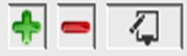
Il est possible de d’ajouter une observation via le bouton "plus" de la fenêtre. Une fois cliqué, la fenêtre suivante s’affiche :
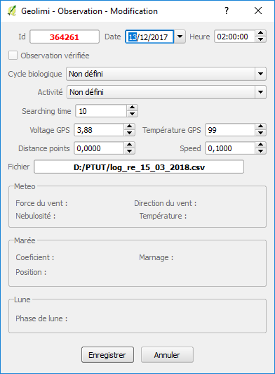
Il est aussi possible de modifier une observation en cliquant sur l’icône du calpin. Il faut cliquer sur une observation, cette dernière se surligne en bleu, puis sur le bouton.
Il est possible d’ajouter une observation via le bouton "plus" de la fenêtre. Une fois cliqué la fenêtre suivante s’affiche :
La modification d'une observation se déroule de la même façon à l'aide d'une fenêtre similaire
La table attributaire :
Dans cette fenêtre toutes les informations liées à l’observation choisies sont présentes. Tous les paramètres sont modifiables et sont sauvegardés dans la base quand le bouton enregistré est cliqué.
C’est ici que seront modifié le cycle biologique et l’activité d’un oiseau pour une observation.
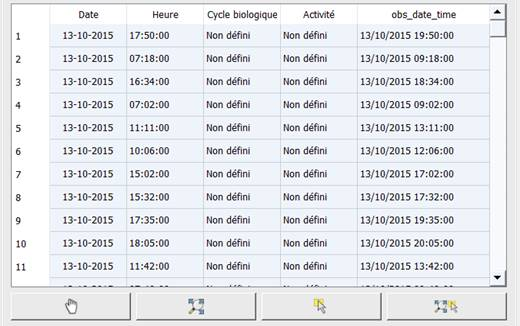
Les outils de la table attibutaire:
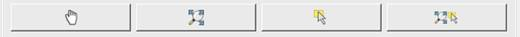
Dans cette partie est présente sous forme de tableau les informations d’observation liés à un individu. Les informations présentes sont « la Date d’observation en GMT», « l’heure d’enregistrement en heure en GMT », « le cycle biologique lié à l’enregistrement », « l’activité de l’oiseau lors de l’enregistrement », « la date et l’heure de l’enregistrement en locale ».
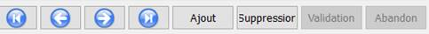
En dessous de ce tableau des outils sont présents pour visualiser la donnée sur la carte.
Centrer sur l’observation, zoomer sur l’observation, sélectionner une observation sur la carte, zoomer et sélectionner l’observation.
Cette barre d’outils permet à l’utilisateur de naviguer entre les différents individus et ses observations. Nous pouvons retourner au début, naviguer entre le suivant ou le précédent, ou se rendre à la fin.
Il est aussi possible d’ajouter ou de supprimer un individu. Ces opérations sont à valider par les boutons "validation" ou "abandon".
La gestion des paramètres
Exemple sur les paramètres espèces, identique sur les autres paramètres
Dans le même onglet il est possible de gérer les paramètres listés ici :
-Ages
-Cycles biologiques
-Districts
-Especes
-Fichiers
-Type d’activité
-Type de marée
-Type de soleil
Dans la gestion des paramètres il est possible de créer de nouveaux paramètres. Par exemple une nouvelle espèce dans la base de données.
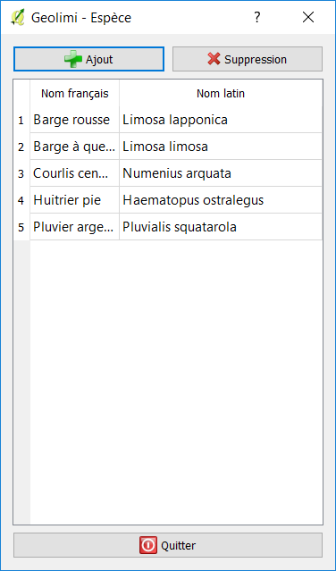
Pour faire cela on ouvre le menu et on choisit le paramètre à gérer. Une fenêtre apparaît avec les espèces déjà existantes. En cliquant sur plus ou sur moins on peut supprimer des paramètres n’étant pas utilisés dans la base de données. Cependant si on ajoute un nouveau paramètre, nous pouvons le supprimer avant qu’il soit utilisé par une observation.
Par exemple si nous ajoutons une nouvelle espèce (ex : Chevalier Arlequin), tant qu’aucune observation ou aucun individu n’y est assimilé nous pourrons la supprimer.